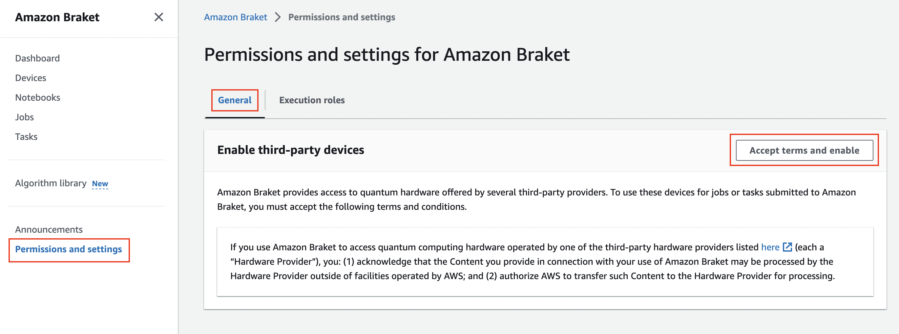
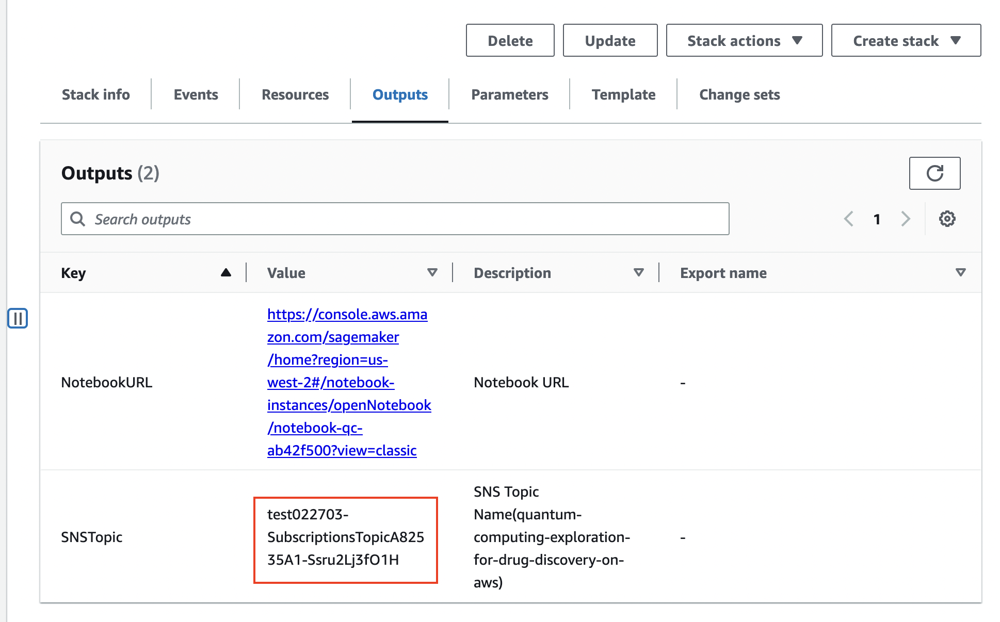

部署解决方案
在部署解决方案之前，建议您先查看本指南中有关架构图和区域支持等信息。然后按照下面的说明配置解决方案并将其部署到您的帐户中。
部署时间：约 15 分钟
说明
建议您在部署此解决方案之前创建账单告警以监控AWS估算费用。
部署本方案需要具有最小的IAM 权限。如果您使用定义在此文件中的权限部署本方案，您的 CloudFormation 堆栈的名字将以 QCEDD开头， 例如：QCEDDStack。
准备工作
以下功能如果已经开通，请忽略「准备工作」。
准备工作：启动 Amazon Braket 服务，并生成执行角色
-
登录到AWS 管理控制台，进入 Amazon Braket 控制台。

-
点击左侧菜单权限和设置, 选中标签页常规, 点击按钮接受并启用 
-
切换到标签页执行角色,点击创建服务链接角色按钮，创建角色

-
点击验证现有角色按钮，创建任务执行角色

步骤 1：启动 CloudFormation 堆栈
-
登录 AWS 管理控制台，选择按钮Launch Stack以启动模板。您还可以选择直接下载模板进行部署。
-
默认情况下，该模板将在您登录控制台后默认的区域启动，即美国西部（俄勒冈）区域。若需在指定的区域中启动该解决方案，请在控制台导航栏中的区域下拉列表中选择。
-
在创建堆栈页面上，Amazon S3 URL 文本框中会自动填写这个模板 URL，请确认模板 URL 正确填写，然后选择下一步。
-
在指定堆栈详细信息页面，为您的解决方案堆栈分配一个账户内唯一且符合命名要求的名称。有关命名字符限制的信息，请参阅AWS Identity and Access Management 用户指南中的IAM 和 STS 限制。
-
在参数部分，查看此解决方案模板的参数并根据需要进行修改。 方案中使用的参数如下：
参数 默认值 描述 snsEmail 无 订阅消息的邮箱 -
选择下一步。
-
在配置堆栈选项页面上，保留默认值并选择下一步。
-
在审核页面，查看并确认设置。确保选中确认模板将创建 Amazon Identity and Access Management（IAM）资源的复选框。选择下一步。
-
选择创建堆栈以部署堆栈。
-
如果配置了订阅邮件，请关注该邮件收件箱，然后点击 确认订阅 链接以确认订阅。
您可以在 AWS CloudFormation 控制台的状态列中查看 stack 的状态。正常情况下，大约 15 分钟内可以看到状态为CREATE_COMPLETE。
步骤 2：（可选）订阅 SNS 通知
当 Job 执行完成后，如果您想获得 Email 通知，可以按照下面的步骤订阅 SNS 通知。您也可以通过短信订阅通知。
-
在堆栈页面，选择本方案的堆栈。
-
选择输出页签，记录 SNS 主题的值。

-
导航至Amazon SNS 控制台。
-
选中主题，然后点击在 CloudFormation 部署的输出中的 SNS 主题。
-
选择创建订阅。
-
在协议列表中，选择电子邮件。
-
在终端节点文本框中，输入可以从 Amazon SNS 接收通知的电子邮件地址。
-
选择创建订阅。
-
检查您的邮箱，您将收到一封邮件，点击邮件中Confirm Subscription链接，确认订阅。
更新 CloudFormation 堆栈
部署完成后，您可以通过更新 CloudFormation 堆栈来修改配置。
重要提示
如果是 notebook 算法内容发生变更，请删除原来 CloudFormation，并创建新的 CloudFormation，更新 CloudFormation 不能让您的算法变更生效。
-
登录AWS CloudFormation管理控制台。
-
选择本解决方案的根堆栈，而不是嵌套堆栈（NESTED）。
-
选择更新按钮。
-
选择使用当前模版，选择下一步。
-
根据需要更改对应的参数，然后选择下一步。
-
在配置堆栈选项页面上，保留默认值并选择下一步。
-
在审核页面，查看并确认设置。确保选中确认模板将创建 Amazon Identity and Access Management（IAM）资源的复选框。选择下一步。
-
选择更新堆栈以更新堆栈。